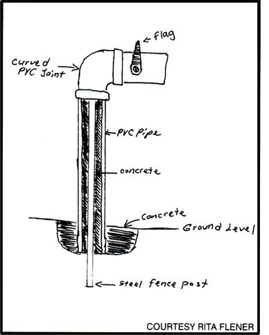

COUNTRY LORE
Here is a mailbox design that's almost impossible to destroy. First dig a hole about a foot deep and about a foot across. In the center drive a steel fence post. Leave the top of the post at the height you need the mailbox. Over the post put a large-diameter PVC pipe and fill the pipe around the post with concrete. Fill in the hole with concrete so about a foot of the PVC is set. Glue a shorter piece of curved-joint PVC to the top. Even though the front is open, very little moisture gets in. Use a long strip of painted wood or metal for the flag and attach it with a nut and bolt through a drilled hole. Tighten it just enough to keep the flag in position.
The white of the PVC makes your name and number show up well on the box. No other maintenance is needed. You never have to paint it, and you don't have to worry about a wooden post rotting and having to be replaced.
RITA FLENER
Cromwell, Kentucky
|
 |
|
|